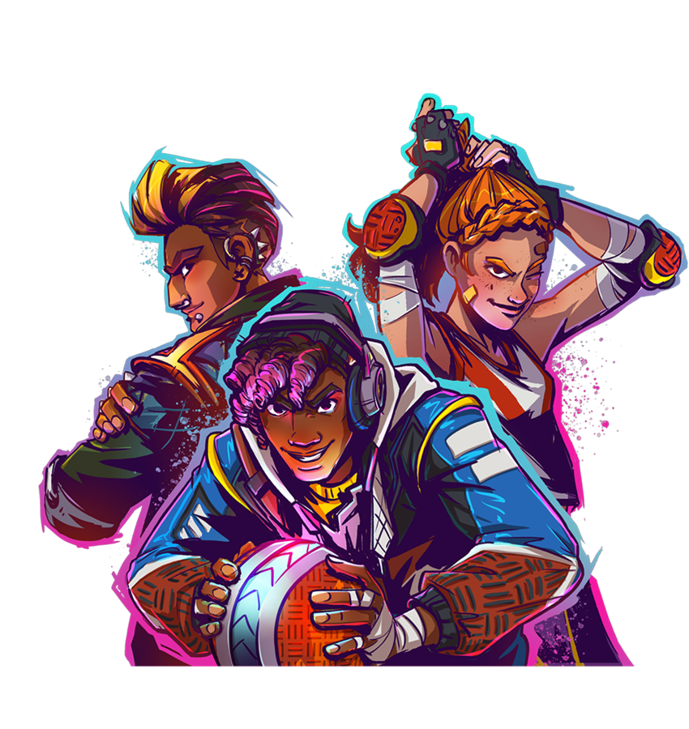

Sign up with us
Inside the Pirate Radio Launcher, log-in to KOCity.cc through the Accounts tab. No account? No problem, you can sign up just as easily. Verify your log-in with a code, and hit the streets!
Join 2,000+ brawlers playing across 1 community-hosted server. Sign in and brawl. It's really that simple.

Live servers
Join community-funded servers across multiple regions. Pick your server, jump in, and show 'em what you've got.
See peak hours on The City Never Sleeps| Server | Region | Status | Players |
|---|---|---|---|
| Loading servers… | |||
What is kocity.cc?
kocity.cc is the sign-in service that opens the door to the largest Knockout City private server in North America. Sign up, sign in, and you get instant access to our server(s).
Inside the Pirate Radio Launcher, log-in to KOCity.cc through the Accounts tab. No account? No problem, you can sign up just as easily. Verify your log-in with a code, and hit the streets!
We report real-time player statuses around the clock, letting you know exactly how many players are online. Detailed information is also available in the Community Discord!
Velan provides the game, we provide you the tools, apps, and server access. Purely for the love of the game. Wanna support us? Become a patron!
Getting started
Getting started with us is easy! Just follow these simple steps. Need help? Ask in the Discord.
Install Knockout City: Private Server Edition from Steam. Don't worry, it's free!
Find it on SteamThe Pirate Radio Launcher is the bridge between the game and the community servers. All you have to do is sign up!
Pirate Radio LauncherThe launcher walks you through the process. After accessing the sign-in page, you get a code, paste it into the launcher, and you're done!
Manual sign-inChoose TCNS from the server list, hit launch, and the game will place you in the Hideout just like the good ol' days.
The City Never Sleeps